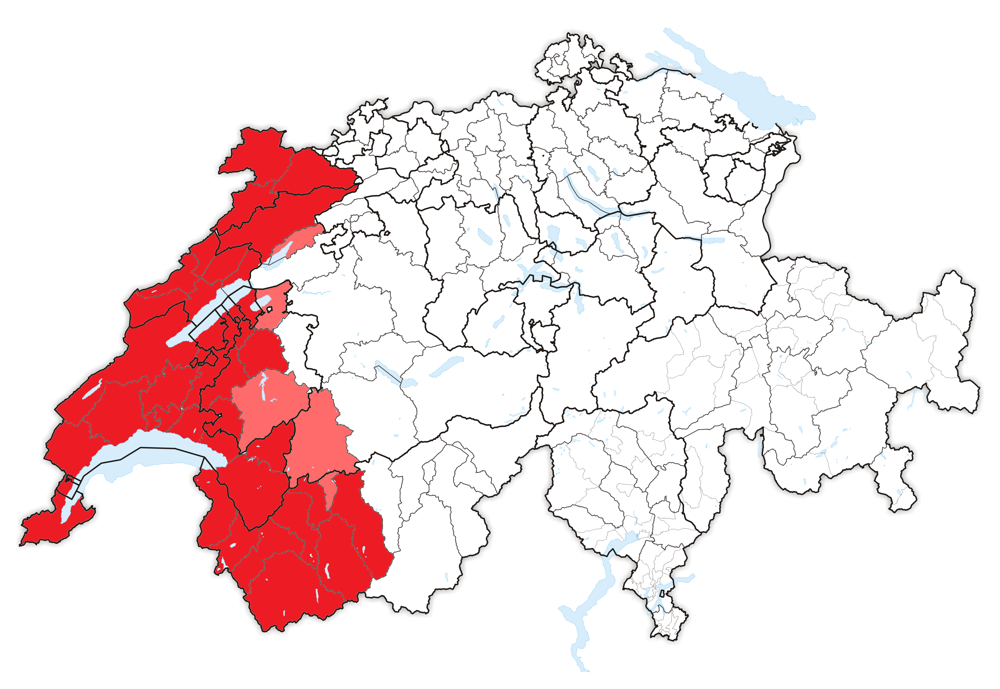

La Romandie, plus qu'un décor de carte postale
Guide de survie en terre romande
Démarrer le guide de survieDécouvrir la Romandie
La Romandie est la région francophone de la Suisse. Située à l’ouest du pays, elle représente environ 23% du territoire suisse.
Le terme « roman » trouve ses origines dans la conquête romaine et, plus précisément, dans le nom donné à cette région : la Romania. Cependant, il faut attendre la Première Guerre mondiale pour que l’expression « Suisse romande » s’affirme véritablement dans la presse et le contexte politique de l’époque, même si elle apparaît déjà au cours du XIXe siècle.
Auparavant, la région était davantage connue sous le nom de « Suisse française ». Cette expression se développe notamment dans le contexte de la Révolution française et de la présence française en Suisse entre 1789 et 1815.
Il est important de préciser que la Suisse romande n’est pas une entité politique indépendante. Elle regroupe six cantons, qui disposent chacun de leurs propres institutions. Ces cantons peuvent toutefois collaborer dans de nombreux domaines, notamment grâce à des conventions et des concordats intercantonaux.
Fribourg
Date d'entrée dans la Confédération :1481
Moments historiques : Fribourg est le premier canton romand à être entré dans la Confédération. Au cours des guerres de Bourgogne, le comte de Gruyère et Fribourg s'allient aux Suisses. À la suite de ces événements, le 22 décembre 1481, Fribourg rejoint la Confédération.
Plat traditionnel du canton : La cuchaule, une brioche jaune faite à base de safran
Fun fact : Il existe une légende qui permet d'expliquer les couleurs noire et blanche du blason de Fribourg. Berthold IV de Zähringen, fondateur de Fribourg, fut surpris par un orage au cours d'une partie de chasse. Comme il n'arriva pas à son domicile avant la tombée de la nuit, il frappa à la porte d'une modeste famille de charbonniers. Le charbonnier l'hébergea dans sa chaumière. Le lendemain matin, lorsque Berthold IV se réveilla, il s'aperçut qu'il avait dormi sur des sacs de charbon recouverts d'un sac de farine. Son pourpoint se retrouva alors noir d'un côté et blanc de l'autre.

Genève
Date d'entrée dans la Confédération : 1815
Moment historique : Jusqu'au 31 décembre 1813, Genève, qui aspirait à retrouver son indépendance, était annexée à la France. À la suite de sa libération par l'armée autrichienne, qui chassa les Français, Genève se rendit compte qu'il lui était nécessaire de s'allier à un État plus grand qu'elle. Elle se tourna alors vers la Confédération helvétique, avec laquelle elle entretenait déjà d'étroits liens.
Plat traditionnel : La longeole, une saucisse composée de viande de porc et aromatisée aux graines de fenouil.
Fun fact :S'il y a bien une chose qui fait la renommée de Genève, c'est évidemment son célèbre Jet d'eau. Aussi surprenant que cela puisse paraître, à l'origine, ce jet n'était pas destiné à devenir le symbole qu'il est aujourd'hui.Pour comprendre son histoire, il faut revenir en 1886, lorsque Genève ouvre une station de pompage hydraulique sur le Rhône afin d'alimenter les machines des usines. En fin de journée, lorsque les machines étaient mises à l'arrêt, une vanne était utilisée pour évacuer la surpression de l'eau, produisant ainsi un jet.Les Genevois l'apprécièrent tellement qu'il devint rapidement une attraction. Par la suite, le Jet d'eau fut déplacé dans la rade et considérablement agrandi pour devenir le monument emblématique que l'on connaît aujourd'hui.

Jura
Jura
Date d'entrée dans la Confédération : 1979
Moment historique : En 1815, à la suite de la défaite de Napoléon, le territoire qui constitue aujourd'hui le Jura est attribué au canton de Berne. Mais, au fil du temps, un problème majeur apparaît : Berne est majoritairement germanophone et protestante, tandis que le Jura est majoritairement francophone et catholique. Pendant plus de 150 ans, les Jurassiens restent rattachés au canton de Berne, tout en développant un mouvement en faveur de leur autonomie. Il faut attendre les années 1970 pour que la question de la séparation soit soumise au vote. Finalement, le 1er janvier 1979, le Jura devient le 26e canton suisse. Il est d'ailleurs le plus jeune canton de Suisse.
Plat traditionnel : La morbiflette, dérivée de la tartiflette et faite à base de fromages locaux.
Fun fact : Ironiquement, bien que le Jura soit le plus jeune canton suisse, son territoire possède une histoire géologique extrêmement ancienne. En effet, le nom de la période jurassique provient du massif du Jura, dont certaines roches ont servi à définir cette période géologique. Le Jurassique a commencé il y a environ 201 millions d'années et s'est terminé il y a environ 145 millions d'années. Des milliers de traces de dinosaures ont d'ailleurs été découvertes dans la région.

Neuchâtel
Date d'entrée dans la Confédération : 1815
Moment historique : C'est en 1814 que le roi de Prusse prend officiellement possession de Neuchâtel. Le canton est ensuite admis dans la Confédération le 19 mai 1815. Neuchâtel possède alors un statut particulier puisqu'il est à la fois une principauté et un canton suisse. Le roi de Prusse conserve son autorité sur la principauté, tandis que Neuchâtel fait partie de la Confédération et doit notamment respecter ses règles militaires et commerciales. La révolution du 1er mars 1848 met fin à ce statut particulier : Neuchâtel abandonne son statut de principauté pour devenir une république. Cela lui permet de s'intégrer pleinement à la Confédération.
Plat traditionnel : La taillaule, une brioche festive et généreuse dans laquelle les pépites de chocolat se sont fait voler la vedette par des raisins secs.
Fun fact : La taillaule, une brioche festive et généreuse dans laquelle les pépites de chocolat se sont fait voler la vedette par des raisins secs.

Valais
Date d'entrée dans la Confédération : 1815
Moment historique : Le Bas-Valais commence à s'émanciper avec la Révolution française. Pendant quelques années, le Valais connaît plusieurs changements de statut : il passe de son intégration à la République helvétique à une indépendance théorique, avant d'être incorporé à l'Empire français. Après la chute de Napoléon Ier, les puissances alliées encouragent le Valais à rejoindre la Confédération. Il devient ainsi le vingtième canton suisse le 4 août 1815.
Plat traditionnel du canton : Le choléra, une tarte gourmande composée d'une superposition de légumes, de fruits et de fromages locaux
Fun fact : À Saillon se trouve l'un des plus petits vignobles du monde. Il ne mesure que 1,6 m² et ne compte que quatre ceps de vigne. Mais le plus surprenant est certainement son propriétaire : le Dalaï-Lama.

Vaud
Date d'entrée dans la Confédération : 1803
Moment historique : Le 24 janvier 1798, le Pays de Vaud est occupé par les armées de la République française. Quelques années plus tard, l'Acte de Médiation, proclamé le 19 février 1803 par le Premier Consul français Napoléon Bonaparte dans le but de réorganiser la Confédération, permet à Vaud de devenir un canton à part entière. Le 14 avril 1803, le Grand Conseil vaudois se réunit pour la première fois. Depuis cette période, la devise du canton est « Liberté et Patrie ».
Plat traditionnel du canton : Le papet vaudois, un plat généreux composé de poireaux fondants, de pommes de terre et de crème, traditionnellement accompagné d'une saucisse aux choux.
Fun fact : Sur le Léman naviguent encore certains des plus anciens bateaux à roues à aubes en activité. Emblématiques de la région, ils parcourent le lac depuis plus d'un siècle. Si vous avez un jour la chance de monter à bord de l'un d'eux, vous aurez l'impression de voyager dans le temps, tout en profitant de vues panoramiques à couper le souffle.

Pourquoi ce site ?
Au moment de la mise en ligne de ce site, je suis en troisième année de licence en Lettres modernes à la Sorbonne (Paris IV), une dernière année que j'effectue par ailleurs à Aarhus, au Danemark. Je me suis lancée dans l'idée, un peu folle, de créer ce site internet ''La Romandie pour les débutants'' comme vitrine pour ma candidature en master de journalisme. La création de ce site est pour moi un moyen de démontrer aussi bien mes compétences rédactionnelles que ma capacité à concevoir et à gérer un média indépendant. J'ai choisi la Romandie comme thématique pour mon site internet car je voulais lui donner les couleurs de mon identité. Pour donner vie à mon projet, il n'y avait pas meilleur sujet que la Romandie, terre où j'ai passé les vingt-deux premières années de mon existence. Je me suis construite en tant qu'individu dans cette région. Si la Romandie a contribué à faire de moi la personne que je suis, elle reste aussi une région méconnue du grand public. A travers ce site, j'ai envie de vous faire découvrir la véritable Suisse romande au-delà des clichés qui lui sont souvent associés. Par contre, il est important de noter que ce site a un but pédagogique. Il ne sera pas là pour édulcorer la réalité de la Romandie et je tiendrai mon rôle de journaliste en essayant de faire preuve de rigueur et d'impartialité, tout en accordant une place à la pluralité des points de vue dans les différents articles publiés sur ce site.
J'espère que vous prendrez autant de plaisir à découvrir ma région que j'en ai eu à créer ce média
Bonne découverte
P.-S la curiosité est le meilleur des guides